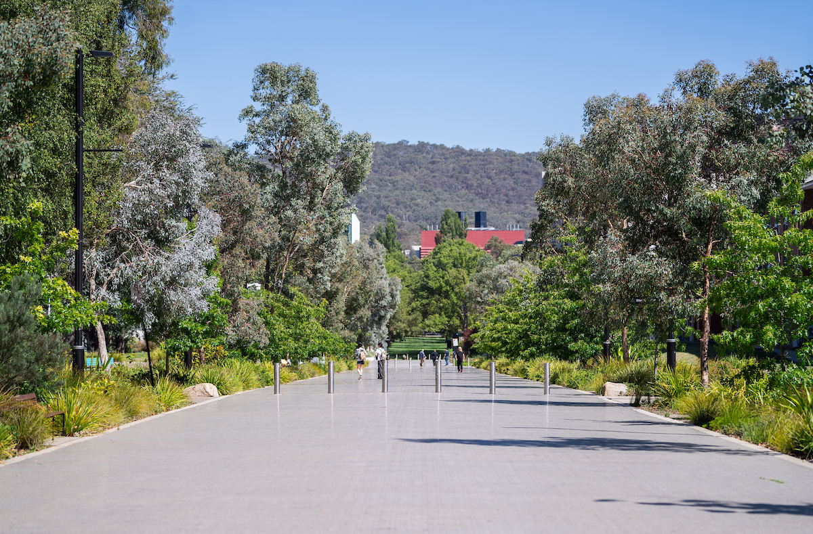
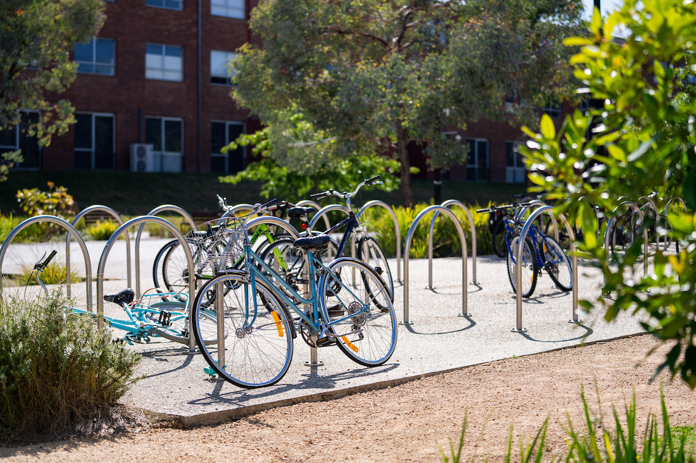
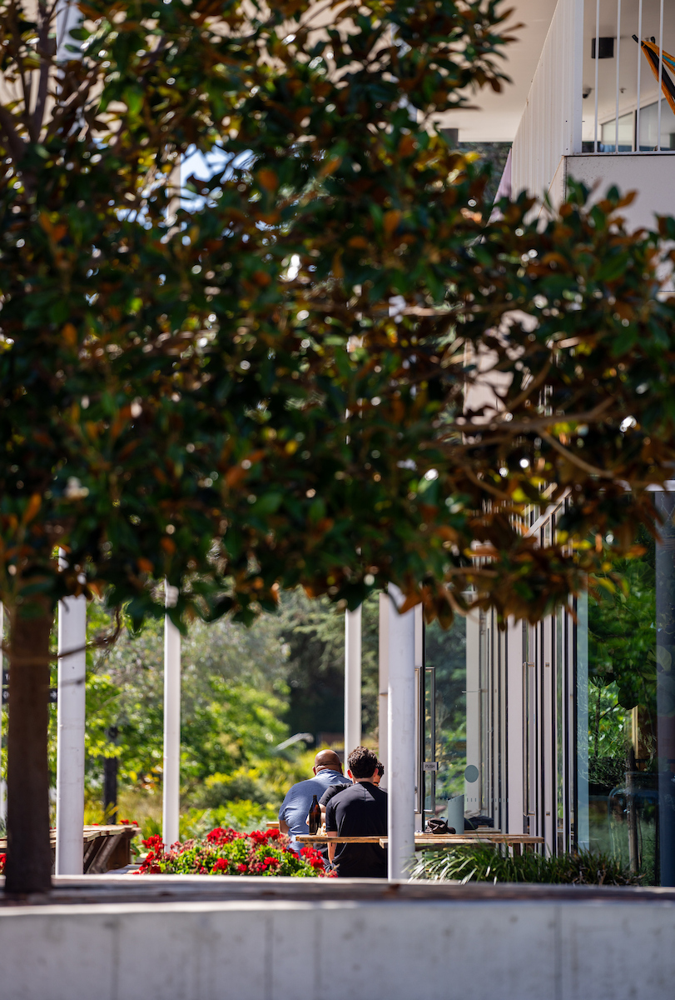

Our people
A day in the life of Margaux Sieb
Have you ever wanted to know what a day in the life of a student at ANU is like? It has sun-filled study sessions, coffee dates, social sport with friends and inspiring academic events. Meet Margaux Sieb, a third-year student balancing a Bachelor of Commerce/Bachelor of Science (Psychology) Flexible Double Degree with a packed soccer schedule.
Morning: rise and research
Margaux lives off campus with a group of friends, a short ride from the academic precinct, and she is at Chifley Library most mornings well before 8am. “The reading rooms are honestly magical at that hour,” she says, settling into her usual corner by the east-facing windows overlooking University Avenue. A flat white from the Arts Centre café is non-negotiable before she opens a single reading, and she likes to get through at least one journal article before the rest of campus is properly awake.
“I used to think early starts were overrated,” she admits. “But there is something about campus at 7am that you cannot replicate at noon — it’s quiet, the light is good, and nobody is rushing anywhere.” She plays for both ANU’s Division 1 and Premier League teams, so training and matches are non-negotiable fixtures around her study timetable.

By the time most students are getting out of bed, Margaux has already claimed her desk, answered her emails, and made a start on the case study she’ll present in her afternoon tutorial. She credits this routine with keeping her sane during exam period.
Good to know: Chifley Library opens at 6am on weekdays during semester — one of the earliest opening times on campus.
Ask her what she’d tell a first-year version of herself, and Margaux doesn’t hesitate — she says she wishes she’d trusted the early mornings sooner instead of fighting them for most of first semester.
The early mornings are my favourite part of ANU life.
By midday, Margaux’s Tuesday runs into a two-hour tutorial on statistical methods, followed by an impromptu study group in Marie Reay Teaching Centre with two coursemates she met in first year. “The tutorial groups are small,” she says. “You actually have to think and talk.”

Good to know
Marie Reay Teaching Centre’s seminar rooms seat between 8 and 20 students, built for discussion, not lectures.
Training starts at 4pm most weekdays, and Margaux says balancing a double degree with two competitive soccer squads was the single biggest adjustment she made in her first year. We asked her what surprised her most about university life outside the classroom.
Question: QUESTION
What surprised you most about ANU?
“How much happens outside class. Half my degree has genuinely happened at Kambri, or on the sideline of a soccer match, or in a group chat with people from a completely different course. Nobody warns you how social it actually gets once you stop treating uni like just lectures and tutorials.”
The early mornings are my favourite part of ANU life.
Most weeknights end with a match or a training session that runs until well after dark, and Margaux says the walk back through Kambri afterwards — tired, a bit sore, usually starving — is one of her favourite parts of the day.

Good to know
ANU Students’ Association trivia runs every Tuesday at 7pm during semester — free entry for all students.
Looking back on her first year, Margaux says most of what she now takes for granted took her a full twelve months to figure out. She has three pieces of advice for anyone just starting out who is trying to fit everything in the way she does.
Three things Margaux wishes she knew in first year
- Book the small seminar rooms early The quiet study rooms in Chifley fill up fast in exam period, sometimes days in advance.
- Treat training like a timetabled class Blocking it out the same way as a lecture made everything else easier to plan around.
- Talk to your tutors, not just your friends Office hours are quiet — a five-minute chat can change how you approach a whole assignment.
By the time she’s back in her room, it’s nearly midnight — training ran long, and there was a group assignment to finish before tomorrow’s tutorial. Margaux says she wouldn’t trade a single hour of it.